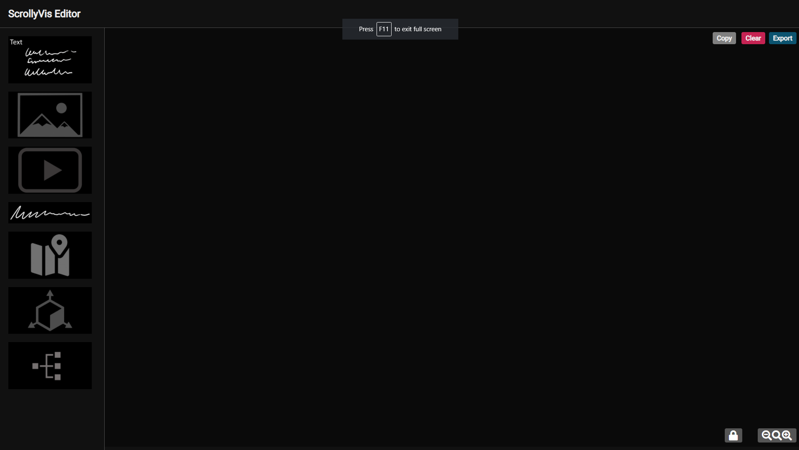
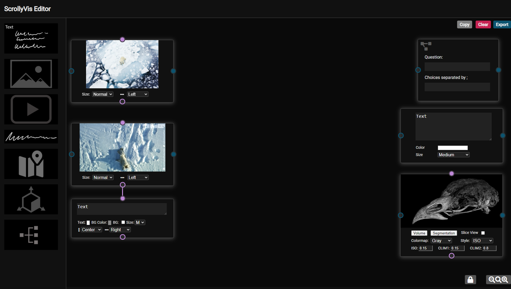
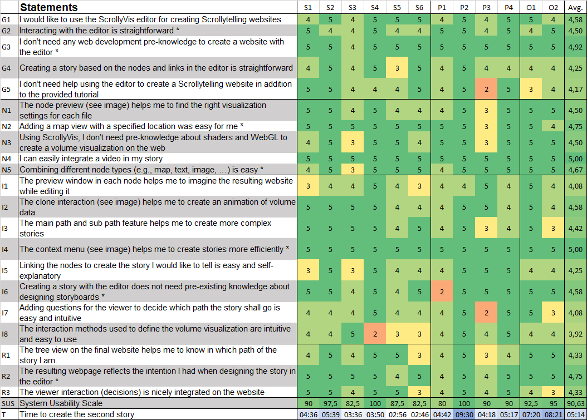
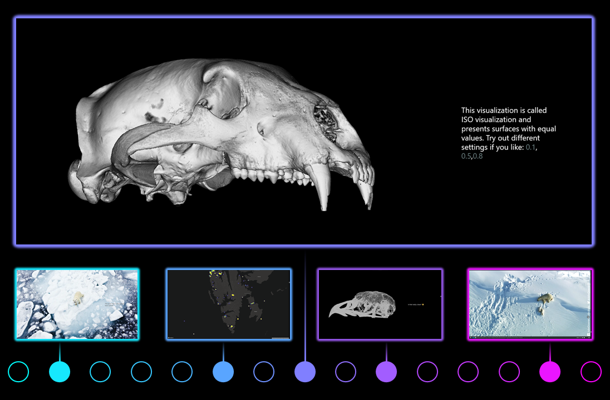
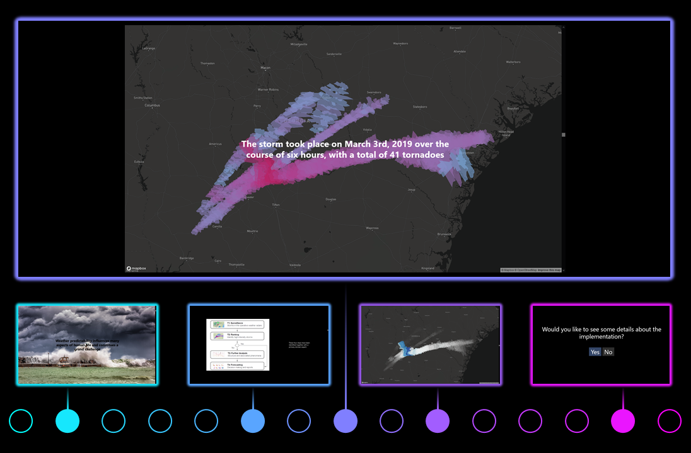

ScrollyVis: Guided dynamic narratives for scientific storytelling
TVCG Submission
done
There are as many stories to tell as stars in the sky!

With ScrollyVis, we present a way to bring story ideas to life.

This enables authors to tell guided dynamic narratives in scrollytelling-form by simply using our editor.

Exported websites are ready for deployment on any webserver.

Our editor allows authors to create guided interactive narratives.
Such narratives are especially important to increase viewer engagement.
Now, we will show you an introduction video to the editor
To demonstrate the utility of our approach we condected a user evaluation with 12 participants
Here are the results:

Overall the editor got very good feedback!
Next, we will demonstrate three case studies created with our editor
Select which case study you would like to see

Together with the curator of the modern osteological collection at the University Museum of Bergen, we created a story focused on outreach activities
This story primarily focuses on polar bears in Svalbard.
Next we show this story in video format.
Learn more in our paper ScrollyVis!

This story is about a visual analytics tool for detection and characterization of hazardous thunderstorms. A paper about this tool is entitled Hornero.
In this story, we include custom code from the Hornero tool.
Next we show the story in video format.
Learn more in our paper ScrollyVis!

This story presents results of a publication on automated segmentation of endometrial cancer imaging data in Magnetic Resonance Imaging using deep learning
The authors introduce an automatic approach to create a segmentation mask.
Next we show this story in video format.
Learn more in our paper ScrollyVis!